Each conjunct (conj) becomes a dependent of the leftmost conjunct.
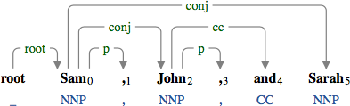
A coordination structure with the conjunction "and".
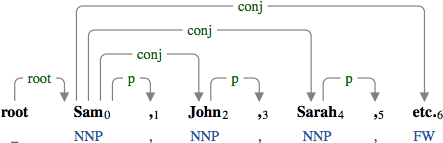
A coordination structure ending with "etc".
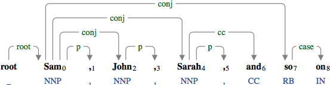
A coordination structure ending with "so on".
Conjuncts do not need to have the same type.
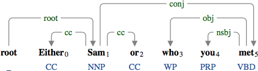
A coordination between the noun phrase "Sam" and the relative clause "who you met".
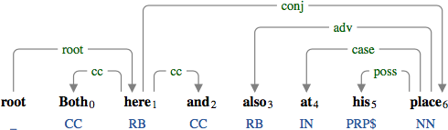
A coordination between the adverb phrase "here" and the preposition phrase "at his place".
When a coordination is used for verbal predicates, the shared arguments are connected by the secondary dependencies.
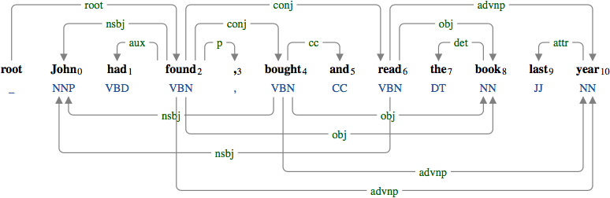
The arguments "John", "the book", and "last year" are shared by the verbal predicates "found", "bought", and "read".
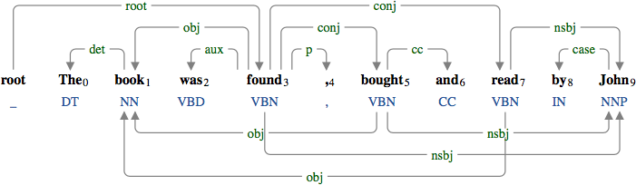
The arguments are shared in the passive construction.
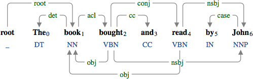
The arguments are shared in the reduced passive construction.
An external subject of an open clause is linked to each verbal predicate in coordination through secondary dependencies.
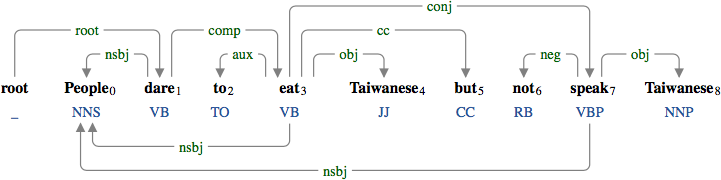
"People" is the subject of the verbs "dare", "eat", and "speak.
Negation is also shared by verbal predicates in coordination.
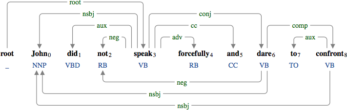
The negation "not" is shared by the verbs "speak" and "dare".
In cases of right node raising, the dependency relations of the shared arguments can vary by different predicates.
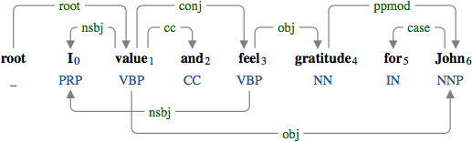
The shared argument "John" is the object of "value", at the same time, it is a modifier of "gratitude".